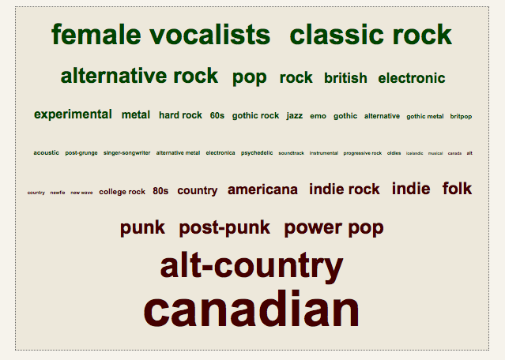

The latest Sound Opinions podcast has an excellent segment on The Dawn of Metal about the early history of Heavy Metal with references to
- Steppenwolf
- Blue Cheer
- Hawkwind
- Led Zeppelin
- Black Sabbath
- Deep Purple
- Uriah Heep
- Judas Priest
- Motorhead
Skip to content, navigation.
The latest Sound Opinions podcast has an excellent segment on The Dawn of Metal about the early history of Heavy Metal with references to
The ISMIR organizers have just added the late-breaking and demo sessions to the program page. It looks like there will be lots of interesting ones to see, including a number that seem to be related to social tags.
Social tag related late-breaking/demo submissions
There are some others that look really interesting too including:
As you can see, I am a sucker for anything related to recommendation, visualization, discovery and/or playlisting. I'm really looking forward to the demo session.
A note to anyone doing a demo - if listening to music is an
essential part of your demo, you may want to consider bringing a set of
high-quality over-the-ear headphones for demoees to use. The ISMIR
demo spaces are always very loud (imagine several hundred researchers
talking, snacking and listening to music simultaneously). Laptop speakers definitely will not be heard in the demo space.
Today Amazon has launched the beta of SoundUnwound - a music web site that looks to be the Wikipedia of music data. SoundUnwound is combining data from IMDB, Amazon and Musicbrainz along with user-contributed data to serve as a one stop site for all the information you could ever want about an artist, album, track, or label.
Already SoundUnwound has lots of interesting data - multiple genre classifications for an artist, detailed profiles, discographies, info on artist members, similar artists, trivia. They have a very nice artist timeline. Here's a subset of the Beatles timeline:

Although SoundUnwound is relying on users to contribute content, they don't seem to be ready to trust all of the data to their users. User edits are reviewed by the SoundUnwound staff before they become official and seen by everyone.
Unfortunately, unlike Wikipedia or Musicbrainz, the data that SoundUnwound collects is not going to be freely available - there's no creative commons license. I am skeptical about any wiki-style site that doesn't make the user-contributed data freely available.
Except for the licensing, I am really excited about SoundUnwound - but I have a few suggestions that could make it really great:
Now that the proceedings for ISMIR 2008 are online, I am reading papers that are on topics that interest me. Today I read the paper Five Approaches to Collecting Tags for Music by Douglas Turnbull, Luke Barrington and Gert Lanckriet. In this paper, Doug and company compare five approaches to collecting tags for music: surveys, web mining, harvesting social tags, autotags and games. The paper presents a well-balanced and complete overview of how tags for music can be collected. They describe some of the issues with each of the methods. Now I don't always agree with some of their characterizations about the strengths and weaknesses of the various approaches which means we'll be able to have some interesting conversations in Philly in a couple of weeks. One topic for discussion: I'd like to get a better understanding of the difference between tags collected in a social context (such as those collected at Last.fm) and those collected in a gaming context.
All in all, this is a good paper If you are interested in
tags and music information retrieval, this paper should be on your short
list.
Last year I posted about my skepticism about the "hit predictors" that claim that they can use machine learning algorithms to predict which songs will be hits. So when the proceedings for ISMIR 2008 went online, the first paper I downloaded was Hit Song Science is Not Yet a Science by Francois Pachet and Pierre Roy. In this paper, Pachet and Roy set out to validate the hypothesis that the popularity of music titles can be predicted from acoustic or human features. It is an interesting paper that concludes:
... the popularity of a song cannot be learnt by using state-of-the-art machine learning techniques. This large-scale evaluation, using the best machine-learning techniques available to our knowledge, contradicts the claims of "Hit Song Science", i.e. that the popularity of a music title can be learned effectively from known features of music titles, either acoustic or human.
The authors do not close the door on 'hit song science' - they
limit their conclusions to say that with the current state-of-the art
features, we cannot predict hits - but with better features it may be
possible. They conclude: Hit song science is not yet a science, but a wide open field.
Now imagine if Amazon wanted to improve its AmazonMp3.com music store with gobs of social data about music - clearly the thing to do would be to buy the company that already has all of the data - that would be Last.fm. Unfortunately for Amazon, Last.fm is now owned by CBS and probably won't be selling it soon.

It is easy to see from this cloud the kind of music that Steve likes that I don't. Also, can you guess what country Steve is from?
Some of been proclaiming that 2008 is the year that the Tag Cloud dies - that this Web 2.0 icon has run its course and will disappear from the web. Certainly there are many sites that have added social tags to their site in such a poor manner that they should be eliminated. We've already seen a few sites such as QLoud, de-emphasize or eliminate tags all together. But I don't think this is the end of social tags - it is just the weeding out of all of the bad implementations of tagging. I think this year we will start to see more innovative ways to use tags to help people organize, explore and discover new content.
Btw, Elias (from Last.fm) and I are giving a tutorial on social tags and music - so if you are interested in social tags and music you might want to check it out.


This is not necessarily a bad recommendation from the point of view of a store trying to sell MP3s, but it is just not the best recommendation for someone who is trying to find some new music.
ChucK is pretty powerful too. Here's a bit of ChucK code by Perry Cook that does a reasonable job imitating the THX deep note - compare this 80 lines of code to the 20,000 lines of code required to make the original.
// THX emulator
// author: Perry R. Cook (Jan 8, 2007)
// modified: Ge Wang (added parameters up top)
// F-1, B1b, F1, B2b, F2, B3b, F3, A5, F4, A6
[ 29.0, 87.5, 116.0, 175.0, 233.0, 350.0, 524.0, 880.0, 1048, 1760,
29.0, 87.5, 116.0, 175.0, 233.0, 350.0, 524.0, 880.0, 1048, 1760,
29.0, 87.5, 116.0, 175.0, 233.0, 350.0, 524.0, 880.0, 1048, 1760
] @=> float targets[];
// storage
float initials[30];
float deltas[30];
// parameters (play with these to control timing)
10000 => int steady_samps;
20000 => int sweep_steps;
15000 => int hold_steps;
8000 => int decay_steps;
// UGens
SawOsc s[30];
Gain gl[30];
Gain gr[30];
JCRev rl => dac.left;
JCRev rr => dac.right;
// reverb settings
0.025 => rl.mix => rr.mix;
// variables
0 => int i => int j;
// compute stuff
for( 0 => i; i < 30; i++ )
{
// random freqs
Std.rand2f( 200.0, 800.0 ) => initials[i] => s[i].freq;
// 10 sample updates
( targets[i] - initials[i] ) / sweep_steps => deltas[i];
// initial gain
0.1 => s[i].gain;
// random
Std.rand2f( 0.0, 1.0 ) => gl[i].gain;
// panning
1.0 - gl[i].gain() => gr[i].gain;
// hook up
s[i] => gl[i] => rl;
// all the oscs
s[i] => gr[i] => rr;
}
steady_samps :: samp => now; // steady cluster
while( j < sweep_steps ) {
for( 0 => i; i < 30; i++ ) {
initials[i] + (deltas[i]*j) => s[i].freq; // sweep freqs.
}
j + 1 => j;
10 :: samp => now;
}
0 => j;
while( j < hold_steps ) { // hold chord
10 :: samp => now;
j + 1 => j;
}
0 => j;
while( j < decay_steps ) {
for( 0 => i; i < 30; i++) {
0.1 * (decay_steps-j) / decay_steps => s[i].gain; // decay gains
}
10 :: samp => now;
j + 1 => j;
}
60000 :: samp => now; // reverb tail
This blog copyright 2010 by plamere